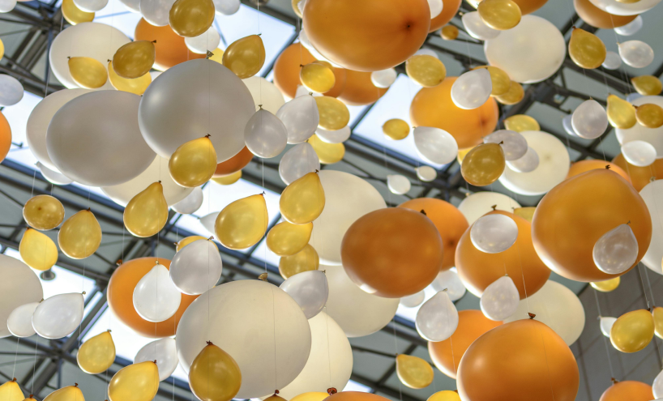

Notre Histoire
Heart Green Event est né de la passion et de l'expertise de Jarry Dominique, une passionnée de décoration DIY envisageant une reconversion dans le secteur de l'événementiel. Avec une vision partagée d'offrir des expériences exceptionnelles à ses clients, l'équipe s'est lancée dans cette aventure entrepreneuriale. En mettant en avant son expertise dans le domaine de l'événementiel et en proposant des services personnalisés répondant aux besoins uniques de chaque client, Heart Green Event se positionne comme une référence dans l'organisation d'événements uniques et mémorables à La Réunion.
Nos valeurs
Chez Heart Green Event, nous sommes profondément engagés envers la durabilité et le respect de l'environnement. Notre approche de l'événementiel repose sur l'utilisation créative de matériaux recyclés et de pratiques éco-responsables. Nous croyons en une approche holistique de l'organisation d'événements, en harmonie avec la nature. Notre engagement envers la durabilité se reflète dans chacun de nos projets, où nous nous efforçons de minimiser notre empreinte écologique tout en offrant des expériences exceptionnelles.

Nos Services
Heart Green Event propose une gamme complète de services d'organisation d'événements, allant des soirées privées aux mariages en passant par les anniversaires et les baptêmes. Chaque événement est conçu avec soin et attention aux détails, en mettant en avant des thèmes personnalisés, des éléments de décoration écologiques et des activités sur mesure. Nous offrons également la possibilité à nos clients de participer à des ateliers de fabrication, où ils peuvent créer des décorations uniques à partir de matériaux recyclés. Notre objectif est de rendre chaque événement inoubliable, tout en respectant notre engagement envers la durabilité.
Nos Réseaux
Heart Green Event est présent sur diverses plateformes de médias sociaux, où nous partageons notre vision, nos projets et nos inspirations avec notre communauté. Suivez-nous sur Facebook, Instagram et Pinterest pour rester informé de nos dernières réalisations, découvrir des idées de décoration écologique et entrer en contact avec notre équipe passionnée. Rejoignez-nous dans notre engagement envers un événementiel plus durable et créatif, et laissez-nous faire de votre prochain événement une expérience inoubliable.